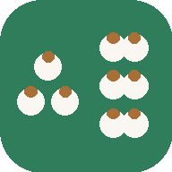

Bygg talet med tiostavar och ental
Gratis · ingen inloggning · skolappar.com
Matematik, åk 1–3, centralt innehåll: ”Positionssystemet och hur det används för att beskriva naturliga tal.”
Appen tränar positionssystemet. Kotten säger ett tal och barnet bygger det på brädan med tiostavar (tio sammanhängande rutor) och entalsklossar. Tio ental växlas automatiskt till en tiostav, och på nivå 3 kommer tal där det gäller att sluta i tid – jämna tiotal och tal som slutar på nio. Källa: Skolverket, läroplanen för grundskolan (Lgr22).